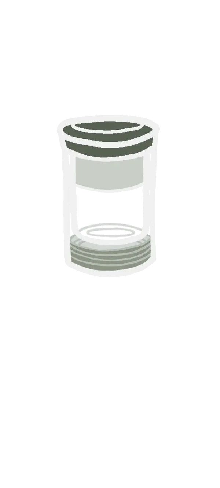
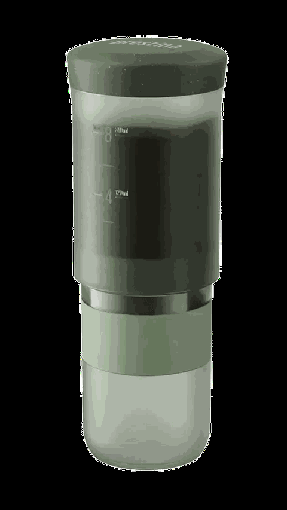
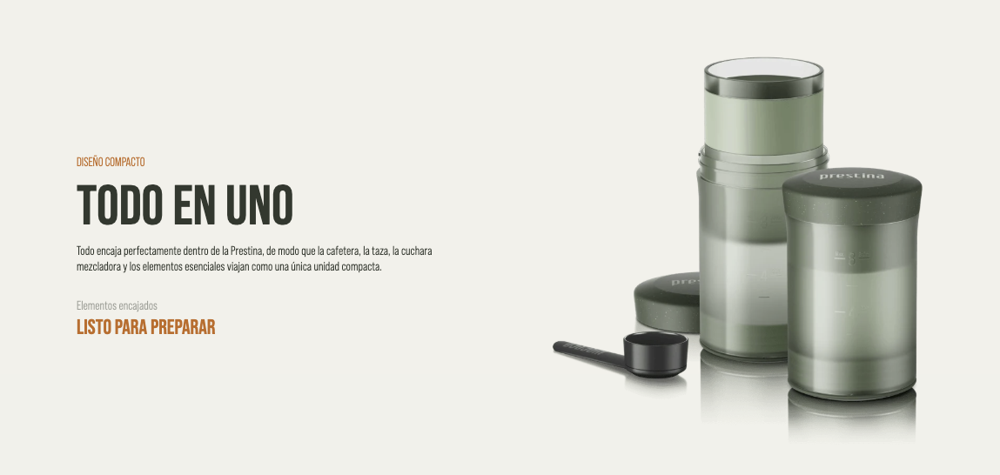
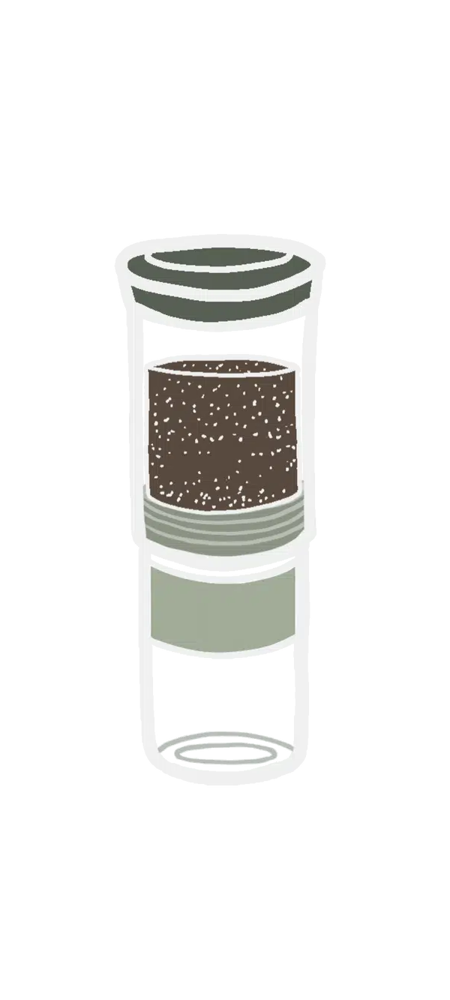
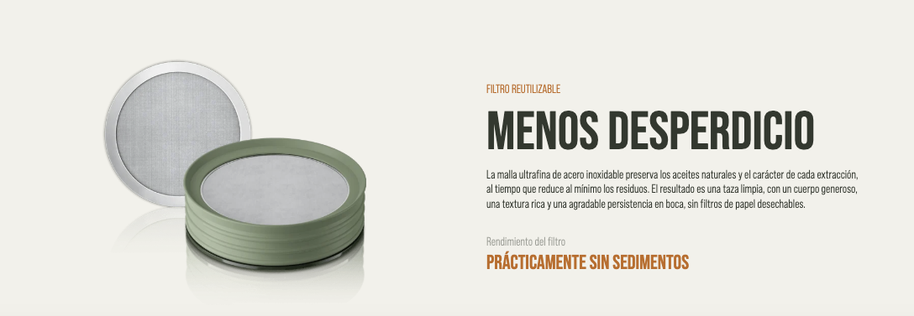

Disponible en Chile
Tu taza Tu prensa
Sin émbolo · simplePrestina es la prensa de viaje que arma el ritual completo en un solo cuerpo: inmersión limpia, poco lío y café listo cuando tú lo estás.
$50.000 CLP
Poco stock · quedan las últimas
Reserva la tuyaUnidades selladas · respuesta humana por WhatsApp
Diseño compacto
Todo en uno
Prensa, taza y lo esencial viajan juntos. Menos piezas sueltas en la mochila o el escritorio: la sacás, la usás y listo.
Lista para preparar

Ritual corto
Prepara y limpia en 2 minutos
Cuatro gestos. Sin molino fancy ni papel filtro.



Punto de partida: ~15 g · 240 ml · ~94 °C · molienda gruesa. Ajusta a gusto.

Menos es más
Menos residuos
Filtro permanente de acero: sin papel que tirar y con mucho menos sedimento en la taza. Café limpio, menos basura, mismo ritual.
Prácticamente sin sedimentos
Por qué Prestina
Menos que pensar.
Más para disfrutar.
- Ritual corto: de la mesa a la taza en minutos.
- Un solo cuerpo: viaja completa, sin piezas sueltas.
- Filtro reutilizable: menos papel, menos lodito.
- Unidades selladas, stock local en Chile.
$50.000 CLP
Poco stock · quedan las últimas
Reserva la tuyaTe confirmo disponibilidad por WhatsApp.